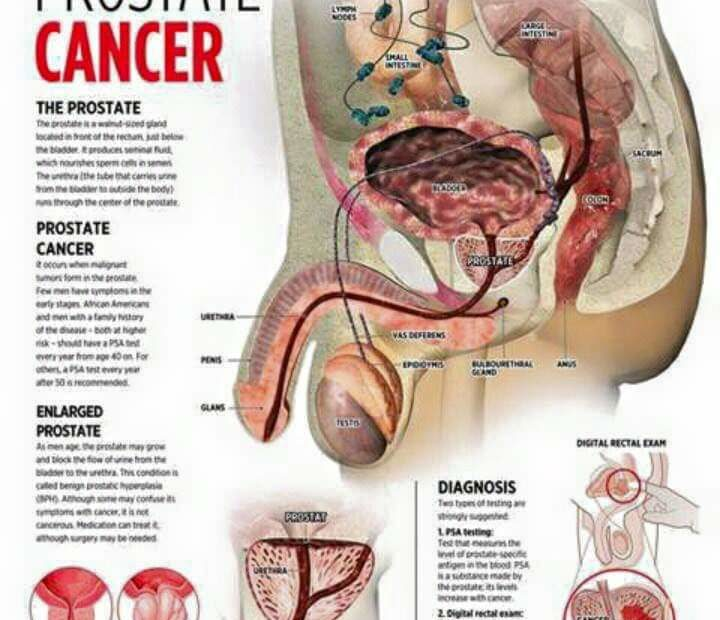
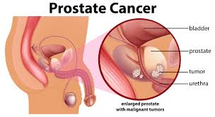

Le Cancer De Prostate.
Le cancer de la prostate représente la troisième cause de mortalité par cancer, après les cancers pulmonaires et les cancers digestifs. Comme pour l'adénome, on ne connaÎt pas la cause de ce cancer : le seul facteur qui peut être incriminé avec certitude est l'âge, puisque ce cancer survient exclusivement chez des hommes âgés, en général de plus de 70 ans. Pour certains, une alimentation riche en graisses serait un facteur prédisposant et la vitamine A aurait un rôle protecteur.
LES PROSTATITES>.
La cause des prostatites aiguës et chroniques est beaucoup plus évidente, puisqu'il s'agit toujours d'un germe infectieux. Celui-ci peut se loger dans la prostate soit à la suite d'une urétrite, par exemple lors d'une contamination vénérienne (index, MST), soit à la suite d'une bactériémie, c'est-à-dire lorsque la bactérie est transportée par le sang. Les germes en cause aujourd'hui sont surtout l'Escherichia coli, le Pseudomonas, le proteus, parfois le staphylocoque, ou encore le gonocoque mais beaucoup moins fréquemment.
RECONNAÎTRE
Les maladies de la prostate ont des symptômes urologiques communs mais également des particularités qui permettent de les différencier.
DES TROUBLES URINAIRES
L'adénome de la prostate se manifeste d'abord et avant tout par des troubles de la miction. On observe une augmentation du nombre des mictions, surtout la nuit. C'est la pollakiurie, avec des envies impérieuses d'uriner, bien que la quantité journalière d'urines ne soit pas plus élevée. Le deuxième signe est la dysurie, c'est-à-dire la détérioration du jet urinaire. Celui-ci se fait normalement en une seule fois, sans forcer. Lorsque l'on souffre d'un adénome de la prostate, on constate qu'il faut « pousser ». Il y a un retard au début de la miction, une imprécision à la fin (gouttes), et le patient a l'impression qu'il n'arrive pas à terminer, c'est-à-dire qu'il reste constamment de l'urine dans sa vessie.Avec l'évolution de la maladie, l'adénome de la prostate évolue vers la rétention des urines, qui est la complication majeure. L'adénome devient tellement important qu'il bloque l'urètre à la sortie de la vessie, empêchant toute sortie d'urines. Il s'agit alors d'une urgence, nécessitant de mettre en place une sonde urinaire. L'adénome prostatique peut s'accompagner de douleurs, parfois de petites hémorragies urinaires ou encore d'infections, telles que des cystites ou des pyélonéphrites, favorisées par la rétention des urines. Le diagnostic d'adénome est confirmé par le toucher rectal et surtout par l'échographie qui montre la grosseur de la tumeur et, éventuellement, la présence d'un résidu d'urines dans la vessie, après la miction. Au moindre doute, on peut faire une biopsie de la prostate afin de ne pas passer à côté d'un cancer. L'évolution de l'adénome est très variable. Pour beaucoup, la rétention d'urines et la dysurie (difficulté à uriner) resteront discrètes, tandis que d'autres nécessiteront une intervention chirurgicale. Dans tous les cas, si on en fait rien, il y a une évolution inéluctable à long terme vers l'insuffisance rénale. Mais n'oublions pas que cette maladie survient uniquement chez les personnes âgées, et que la plupart des adénomes passent inaperçus.
UN DIAGNOSTIC DIFFICILE
Le cancer de la prostate est reconnu également sur des symptômes urologiques : comme pour l'adénome, le patient se plaint de troubles urinaires comme une pollakiurie (des urines fréquentes) et une dysurie (une difficulté à uriner), mais d'installation plus rapide que lors d'un adénome. Devant ces symptômes, le toucher rectal est l'examen fondamental : il révélera une petite tumeur, dure et bosselée, de la prostate. Ce diagnostic sera confirmé par l'échographie et en particulier par l'« échographie endos-rectale » (qui utilise un endoscope pour réaliser une échographie « interne »). En cas de doute, c'est-à-dire lorsqu'on ne sait pas avec certitude s'il s'agit d'un adénome ou d'un cancer, on fera une biopsie de la prostate, à travers le rectum, au cours d'une rectoscopie.
Parfois, le cancer ne se révèle qu'au stade des complications, c'est-à-dire lorsqu'il y a déjà des métastases : le patient se plaint de troubles neurologiques, rhumatologiques ou digestifs qui sont en fait dus à la présence de métastases d'origine prostatique. L'examen biologique le plus important est le dosage du PSA (Prostatique Spécifique Antigen), une protéine fabriquée par la prostate. Cette protéine
 